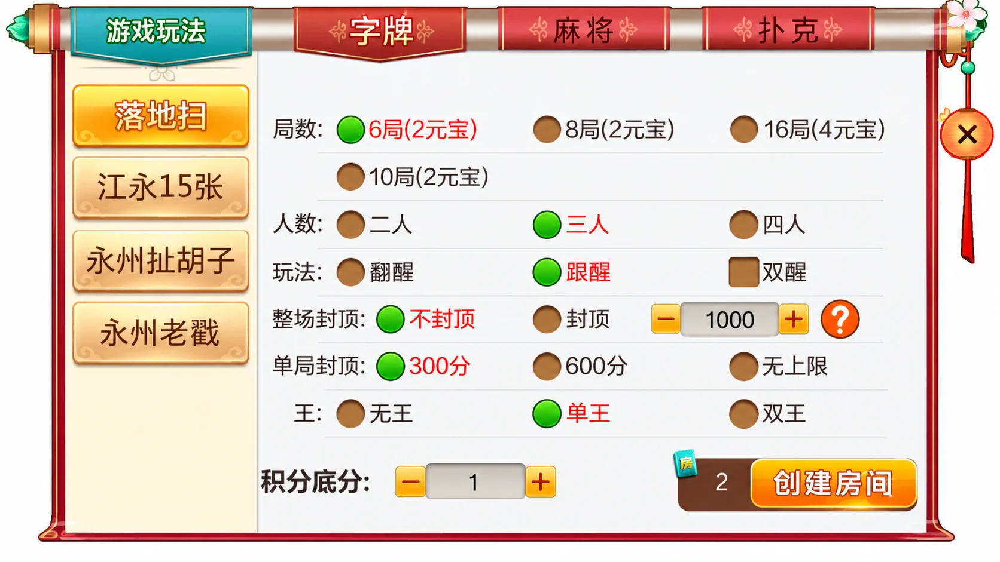
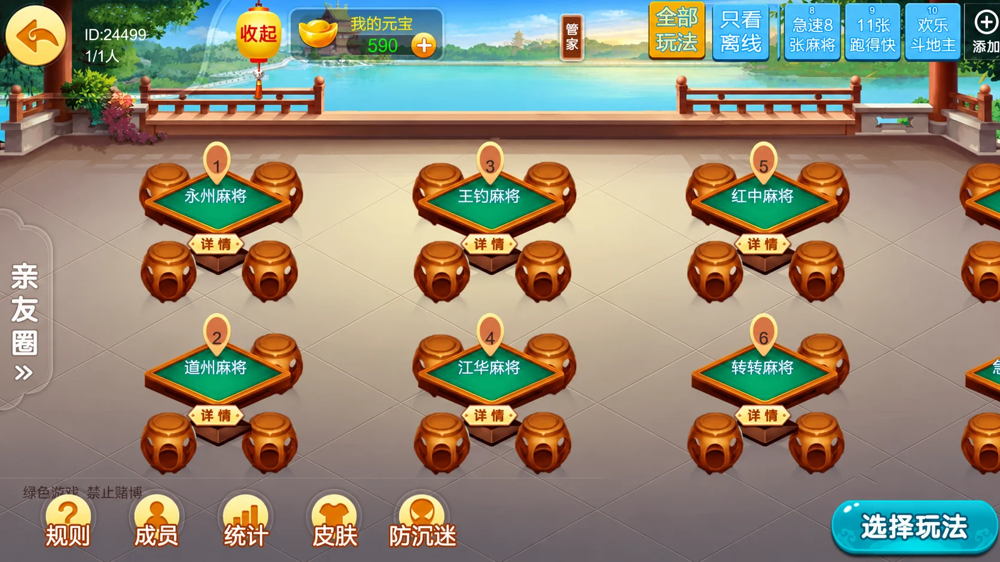

七星系列 · 地区界面与技术笔记
七星永州：字牌配置与地区桌台筛选
从落地扫配置到永州、道州、江华桌台，观察不同层级的选项和状态。
永州版本的地区组合
永州合集的麻将清单列出急速8张麻将、长沙麻将、转转麻将、红中麻将、江华麻将、永州麻将、道州麻将和王钓麻将；扑克列出11张跑得快、欢乐斗地主、跑得快和永州包牌；字牌列出落地扫、江永15张、永州扯胡子和永州老戳。
这里的地方名称不仅作为标题出现，也进入房间列表和字牌侧栏。公开介绍写“14个游戏”，逐项名单却有16个名称；文章不据此承诺安装数量，也不把相近名称当成规则相同的游戏。
字牌表单与桌台视图
落地扫面板把局数、人数、玩法、整场封顶、单局封顶和“王”分成不同选项行。部分控件是单选，另有方形开关，前端不能仅凭颜色推断其数据类型。亲友圈画面用桌号与名称区分永州麻将、道州麻将、王钓麻将、江华麻将等房间，上方还有玩法筛选和“只看离线”。




配图为第三方画面的AI整理展示，未验证原工程运行。亲友圈左上ID与桌号保留为界面标识，未作为个人账号替换；元宝及积分的业务含义、兑换与结算机制未核实。
组合筛选与状态更新
此专题关注桌台列表的筛选，而非重复株洲文章的草稿校验。开发类似列表时，玩法选择和在线状态应共同生效；取消某个筛选条件时只移除该条件。切换前后的排序保持稳定，避免用户正在点击的桌台突然跳位。
下面是独立示例：假设应用将“离线桌台”定义为在线成员数为0。这个定义仅用于示例，不推断七星产品中按钮的真实实现；真实需求应明确“离线”指玩家、桌台还是连接状态。
export function filterTables(tables, {game = null, offlineOnly = false} = {}) {
return tables.filter(t =>
(game === null || t.game === game) &&
(!offlineOnly || t.online === 0));
}
查看独立示例。8项断言覆盖单条件、组合条件、空结果、未知玩法、稳定顺序及输入不变。返回的是新数组，内部对象仍共享引用；修改房间属性前应明确状态管理策略。
实际列表还需要处理增量状态更新：保留稳定的桌台标识，先合并新状态，再按当前条件生成可见列表。若目标房间已失效，详情页应给出刷新提示，不在客户端假定仍可加入。
技术核验边界
本篇只讨论可见界面与通用列表设计。未运行第三方工程，未验证双端构建、通信协议、玩法计算或服务端权限。落地扫中的“翻醒”“跟醒”等词仅按界面记录，不补写未经确认的判定公式。